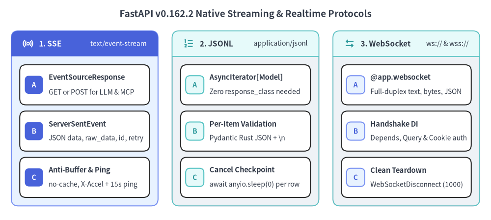
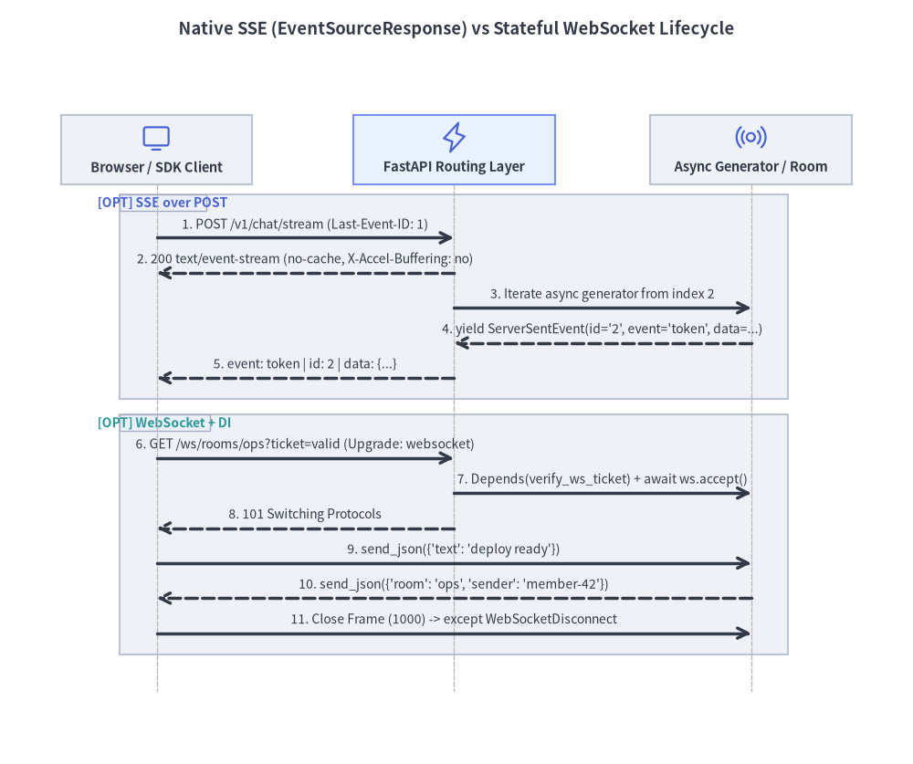

ネイティブ SSE・JSONL・WebSocket
FastAPI v0.162.2 は、外部ライブラリなしでネイティブ Server-Sent Events（EventSourceResponse）、型安全な JSON Lines ストリーミング（AsyncIterator[Model]）、および双方向 WebSocket エンドポイントの 3 方式を標準搭載し、Pydantic による高速直列化・プロキシのバッファ抑止ヘッダー・協調的キャンセルチェックポイントを自動化します。

1. ストリーミング方式の選定基準
エンドポイントを実装する前に、通信の方向性・再接続要件・クライアント種別に応じて最適なプロトコルを選択します。
| 比較項目 | ネイティブ SSE (EventSourceResponse) |
ネイティブ JSON Lines (AsyncIterator[T]) |
WebSocket (@app.websocket) |
|---|---|---|---|
| 通信の方向性 | サーバーからクライアントへの単方向配信（GET / POST） |
サーバーからクライアントへの HTTP チャンク配信 | 双方向（全二重）通信 |
| メディアタイプ | text/event-stream |
application/jsonl |
ステートフルな RFC 6455 フレーム |
| 自動再接続 | ブラウザ EventSource 標準対応（Last-Event-ID） |
クライアント側で HTTP リトライ制御 | クライアント側でバックオフ再接続 |
| キープアライブ | 15 秒ごとに : ping コメントを自動送出 |
チャンク送出駆動 | プロトコルレベルの Ping/Pong フレーム |
| 適したユースケース | LLM トークン配信、POST 型 MCP ストリーム、進捗通知 |
大量データの逐次エクスポート、サービス間連携 | 共同編集ルーム、低遅延な双方向制御 |

2. ネイティブ Server-Sent Events（fastapi.sse）
FastAPI v0.162.2 は、ルーティング層と密結合した専用モジュール fastapi.sse（EventSourceResponse および ServerSentEvent）を提供します。
GETだけでなくPOSTでも動作: 従来のGET限定ラッパーとは異なり、response_class=EventSourceResponseは任意の HTTP メソッドに対応するため、JSON ボディを受け取る LLM 推論ストリームや MCP（Model Context Protocol） サーバーのPOSTストリーミングをそのまま実装できます。- リバースプロキシ対策と自動キープアライブ:
Cache-Control: no-cacheとX-Accel-Buffering: no（Nginx のレスポンスバッファリング抑止）を自動付与し、さらにリクエストスコープのクリーンアップ境界（ストリーム終了後に解放）内で分離された AnyIO メモリストリームタスクが15秒ごとに: pingコメントを送出します。ジェネレーター本体にCancelledErrorを混入させずにアイドルタイムアウトを防げる設計です。 - 型安全な
ServerSentEvent構造:dataフィールド（Pydantic モデル・辞書・文字列）は常に JSON 直列化され、事前整形済みテキスト（[DONE]や HTML 断片など）には排他的なraw_dataを使用します。eventやidの改行・ヌル文字検証により SSE フォーマット破壊も防止されます。
from collections.abc import AsyncIterator
from typing import Annotated
from fastapi import FastAPI, Header
from fastapi.sse import EventSourceResponse, ServerSentEvent
from fastapi.testclient import TestClient
from pydantic import BaseModel
app = FastAPI()
class PromptRequest(BaseModel):
prompt: str
TOKENS = ["FastAPI", "v0.162.2", "streams", "SSE"]
@app.post("/v1/chat/stream", response_class=EventSourceResponse)
async def stream_completion(
body: PromptRequest,
last_event_id: Annotated[str | None, Header()] = None,
) -> AsyncIterator[ServerSentEvent]:
start_idx = int(last_event_id) + 1 if last_event_id is not None else 0
yield ServerSentEvent(comment="stream-open", retry=3000)
for idx in range(start_idx, len(TOKENS)):
yield ServerSentEvent(
data={"index": idx, "token": TOKENS[idx], "prompt": body.prompt},
event="token",
id=str(idx),
)
yield ServerSentEvent(raw_data="[DONE]", event="done")
client = TestClient(app)
res = client.post(
"/v1/chat/stream",
json={"prompt": "explain sse"},
headers={"Last-Event-ID": "1"},
)
assert res.headers["content-type"].startswith("text/event-stream")
assert res.headers["x-accel-buffering"] == "no"
assert "id: 2\n" in res.text
3. ネイティブ型付き JSON Lines（application/jsonl）
バックエンドマイクロサービス間、CLI クライアント、データパイプライン向けに構造化レコードを逐次配信する場合は、response_class を指定せずジェネレーター関数の戻り値型に AsyncIterator[MyModel]（または Iterator[MyModel]）を宣言するだけで完結します。
- FastAPI が自動的に
media_type="application/jsonl"を設定し、OpenAPI 3.1 スキーマ にも要素モデルを出力します。 yieldされた各要素は Pydantic の Rust 製TypeAdapterで 1 件ずつ検証・UTF-8 JSON バイト列化（+ b"\n"）され、契約違反があれば即座にResponseValidationErrorを送出します。- 非同期ジェネレーターでは 1 行送出するごとに
await anyio.sleep(0)のチェックポイントを挟むため、クライアント切断時に高速なインメモリ生成ループも即座にキャンセルされます。
from collections.abc import AsyncIterator
from fastapi import FastAPI
from fastapi.testclient import TestClient
from pydantic import BaseModel
app = FastAPI()
class MetricSample(BaseModel):
seq: int
service: str
latency_ms: float
@app.get("/v1/metrics/export")
async def export_metrics() -> AsyncIterator[MetricSample]:
samples = [
MetricSample(seq=1, service="gateway", latency_ms=4.2),
MetricSample(seq=2, service="billing", latency_ms=11.8),
]
for sample in samples:
yield sample
client = TestClient(app)
res = client.get("/v1/metrics/export")
assert res.headers["content-type"].startswith("application/jsonl")
rows = [MetricSample.model_validate_json(line) for line in res.text.splitlines() if line]
assert len(rows) == 2
4. DI 統合された双方向 WebSocket エンドポイント
クライアントからも低遅延にメッセージを送信し続ける必要がある場合は、@app.websocket(...) を宣言します。WebSocket ルートでも HTTP エンドポイントとまったく同じ Depends()、Query()、Header()、Cookie() の依存性解決エンジンを利用できます。
- ハンドシェイク承認前の早期拒否:
await ws.accept()を呼ぶ前に依存関数内でチケットやセッション Cookie を検証し、不正な接続はWebSocketException(code=status.WS_1008_POLICY_VIOLATION)で拒否します。 WebSocketDisconnectによる確実な後始末: 受信ループをtry ... except WebSocketDisconnect:（またはfinally:）で囲み、ブラウザタブ閉鎖や回線切断時にルーム参加状態や Pub/Sub 購読を確実に解放します。
from typing import Annotated
from fastapi import (
Depends,
FastAPI,
Query,
WebSocket,
WebSocketDisconnect,
WebSocketException,
status,
)
from fastapi.testclient import TestClient
app = FastAPI()
events: list[str] = []
async def verify_ws_ticket(
ticket: Annotated[str | None, Query()] = None,
) -> str:
if ticket != "valid-ticket":
raise WebSocketException(
code=status.WS_1008_POLICY_VIOLATION,
reason="Invalid or missing ticket",
)
return "member-42"
@app.websocket("/ws/rooms/{room_id}")
async def room_socket(
ws: WebSocket,
room_id: str,
member_id: Annotated[str, Depends(verify_ws_ticket)],
) -> None:
await ws.accept()
events.append(f"join:{room_id}:{member_id}")
try:
while True:
payload = await ws.receive_json()
await ws.send_json(
{"room": room_id, "sender": member_id, "text": payload["text"]}
)
except WebSocketDisconnect:
events.append(f"leave:{room_id}:{member_id}")
client = TestClient(app)
with client.websocket_connect("/ws/rooms/ops?ticket=valid-ticket") as socket:
socket.send_json({"text": "deploy ready"})
assert socket.receive_json()["sender"] == "member-42"
assert events == ["join:ops:member-42", "leave:ops:member-42"]
続いて第 6 章の ネイティブ OpenTelemetry と例外処理 では、依存解決・エンドポイント・ストリーム・例外を横断的に可視化する組み込みテレメトリ基盤を解説します。